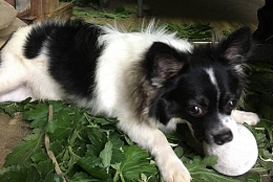
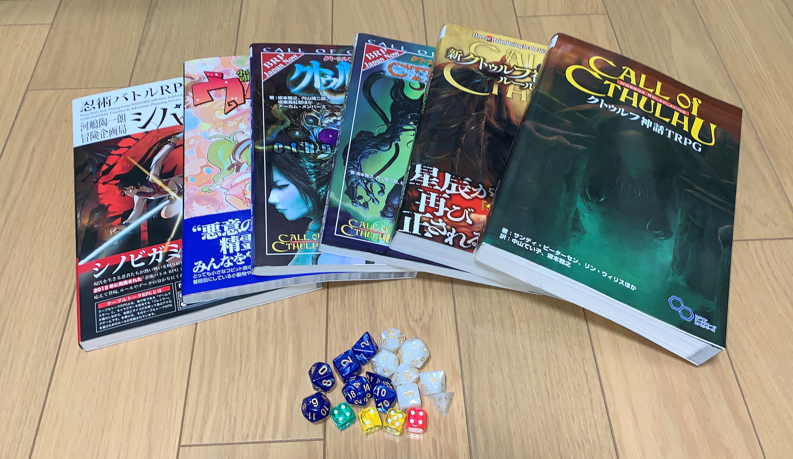

自己紹介
| 氏名 | 松延真夜 |
|---|---|
| 生年月日 | 2002/2/1 |
| 血液型 | O型 |
| 趣味 | 読書・動画を見る事 |
ここは松延真夜のサイトです。
このサイトでは、私の趣味のひとつであるTRPGについて簡単に紹介します。

TRPGとは
テーブルトークRPG、あるいはテーブルトーク・ロールプレイングゲームとは、テーブルゲームのジャンルのひとつ。ゲーム機などのコンピュータを使わずに、紙や鉛筆、サイコロなどの道具を用いて、人間同士の会話とルールブックに記載されたルールに従って遊ぶ“対話型”のロールプレイングゲームを指す言葉。（Wikipediaより引用）
ここでは、TRPGのシステムのうち、クトゥルフ神話TRPG、シノビガミ、ウタカゼの3つについて紹介します。左のメニューの文字をクリックするとそれぞれのページへいけます。